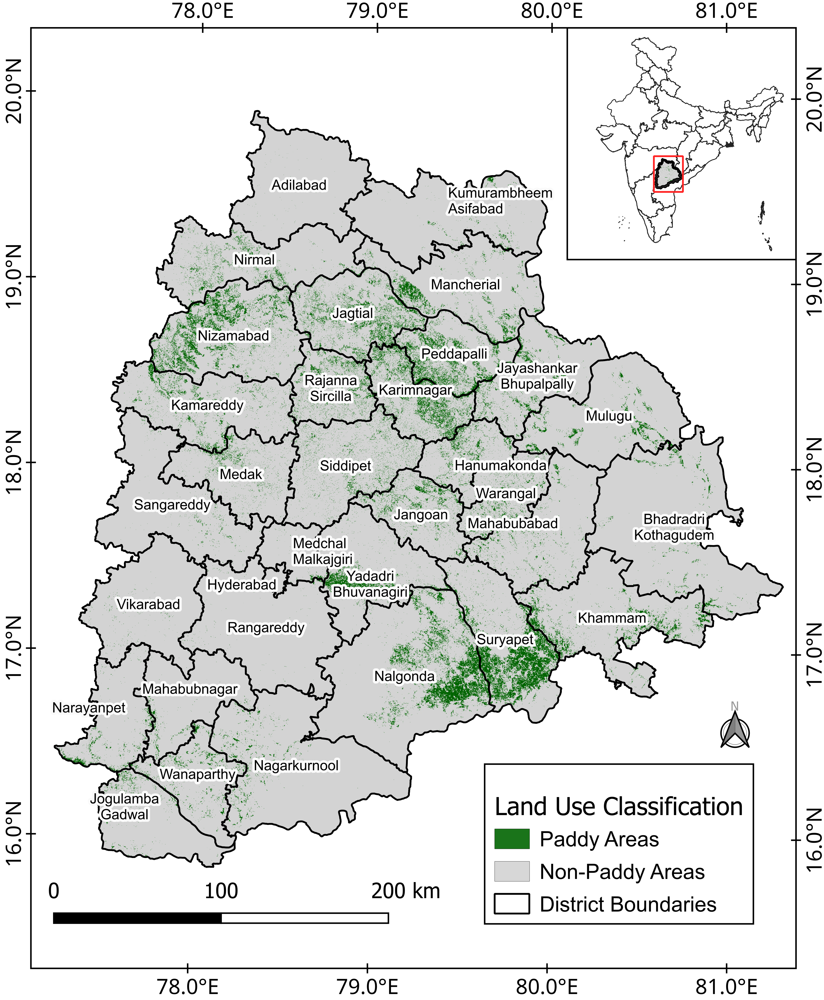
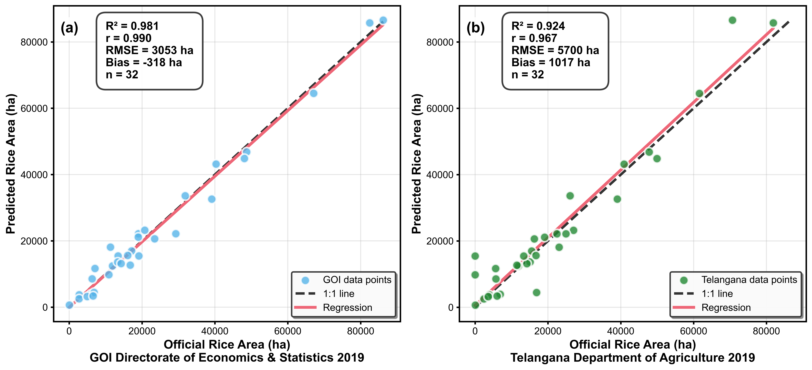
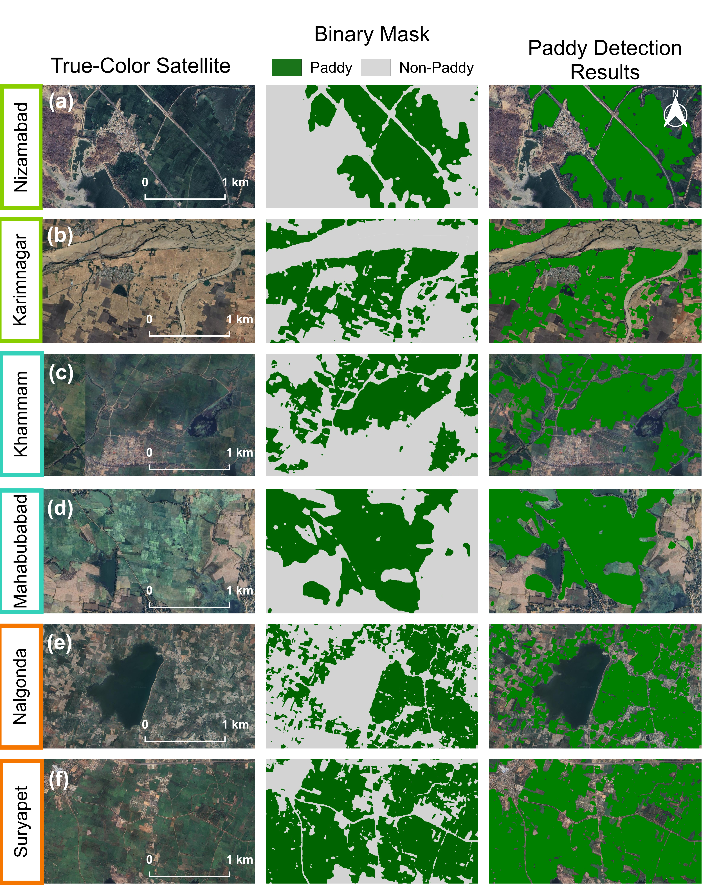
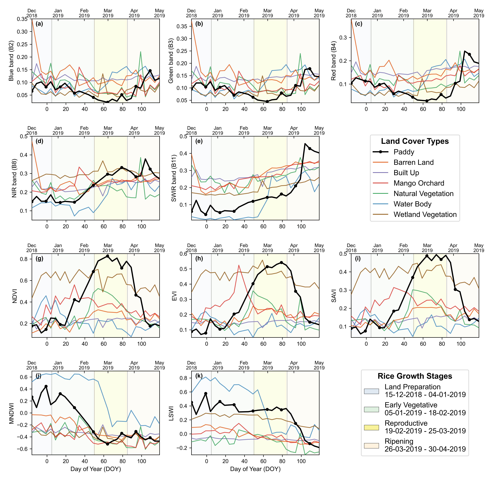
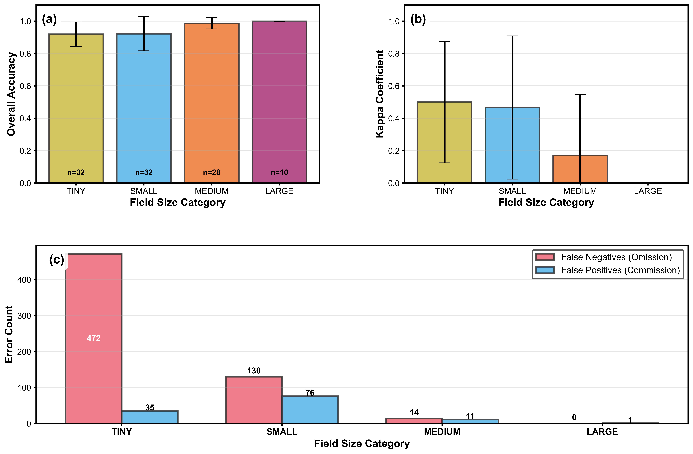

Classification Outputs
Visual outputs from the phenology-driven classification across Telangana state.

State-Wide Rice Distribution Map
732,345 hectares of rice cultivation mapped across 32 districts. Highest concentrations in Nalgonda (86,574 ha) and Suryapet (85,754 ha).

Classification Performance
93.3% overall accuracy. 16 districts >95%, 21 districts >90%. Two districts achieved perfect 100% accuracy.

Area Estimation Validation
R² = 0.981 vs GOI statistics, R² = 0.920 vs Telangana Dept. Total mapped area within 1.4% of official figures.

High-Resolution Validation
True-color satellite, binary mask, and detection overlay for 6 representative districts across all agro-climatic zones.

Spectral-Temporal Signatures
Rice paddy's distinctive flood-green-senescence trajectory across 5 spectral indices, clearly separating from other land covers.

Field Size Analysis
6.8 percentage point accuracy decline from medium to tiny fields. Omission errors dominate in sub-0.2 ha fields.